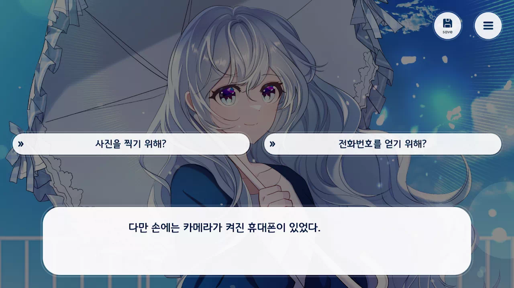
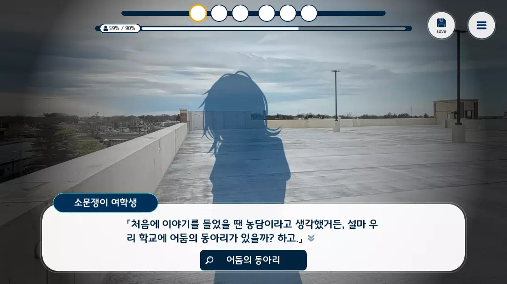
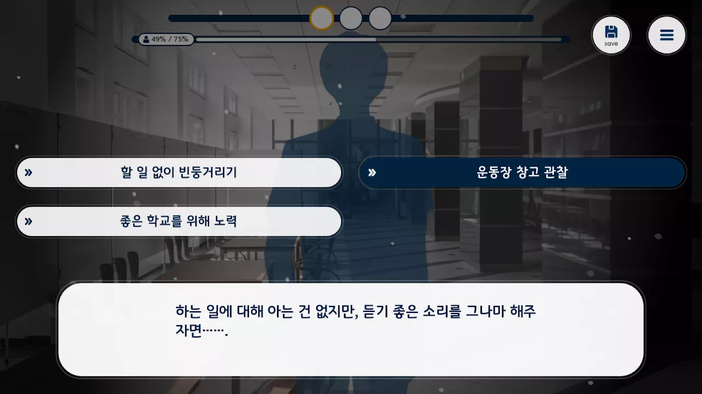
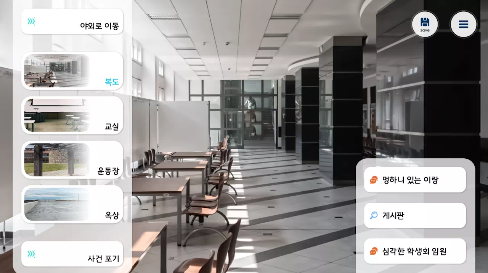
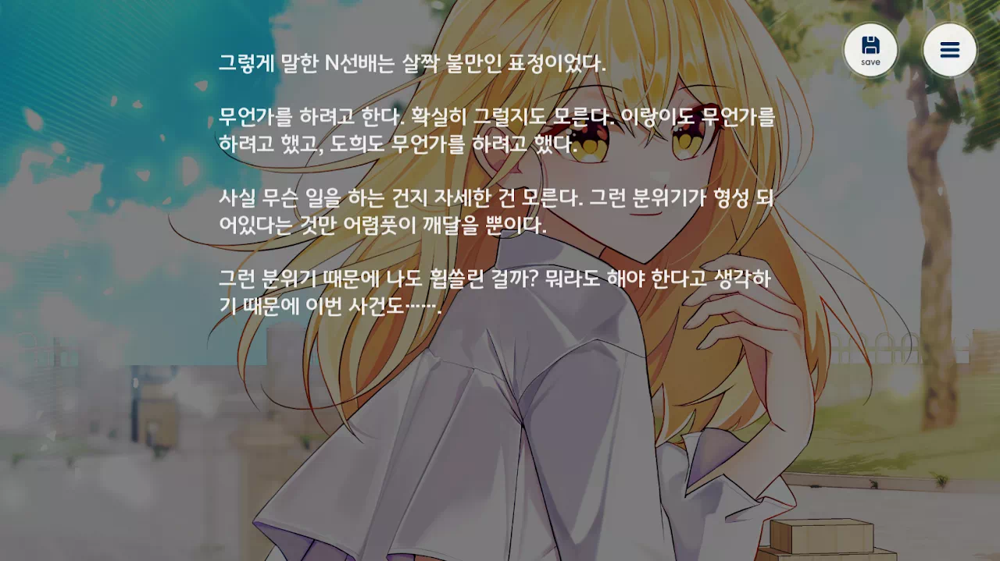
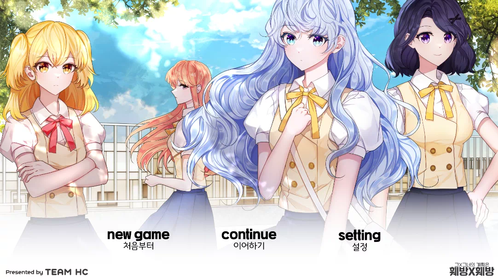
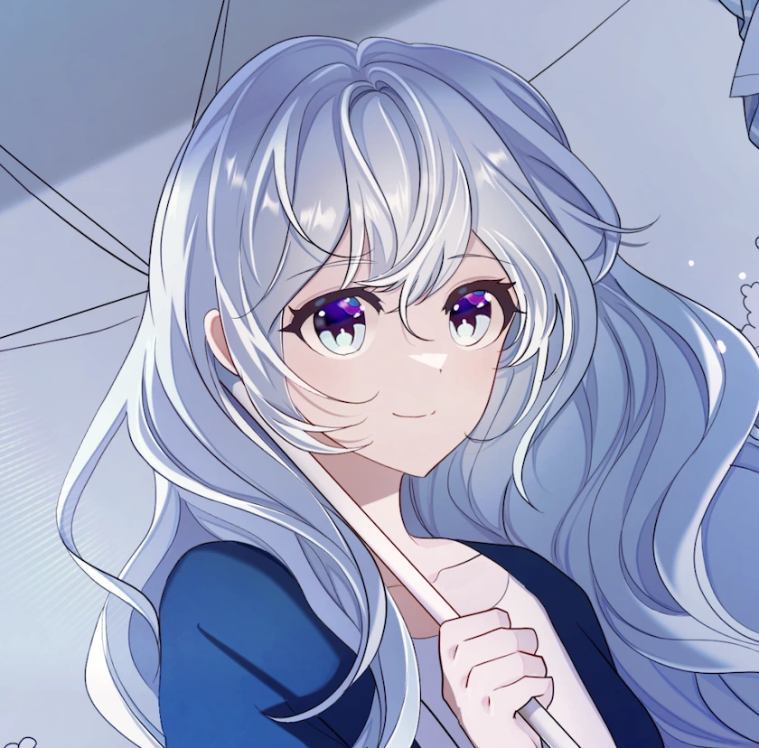
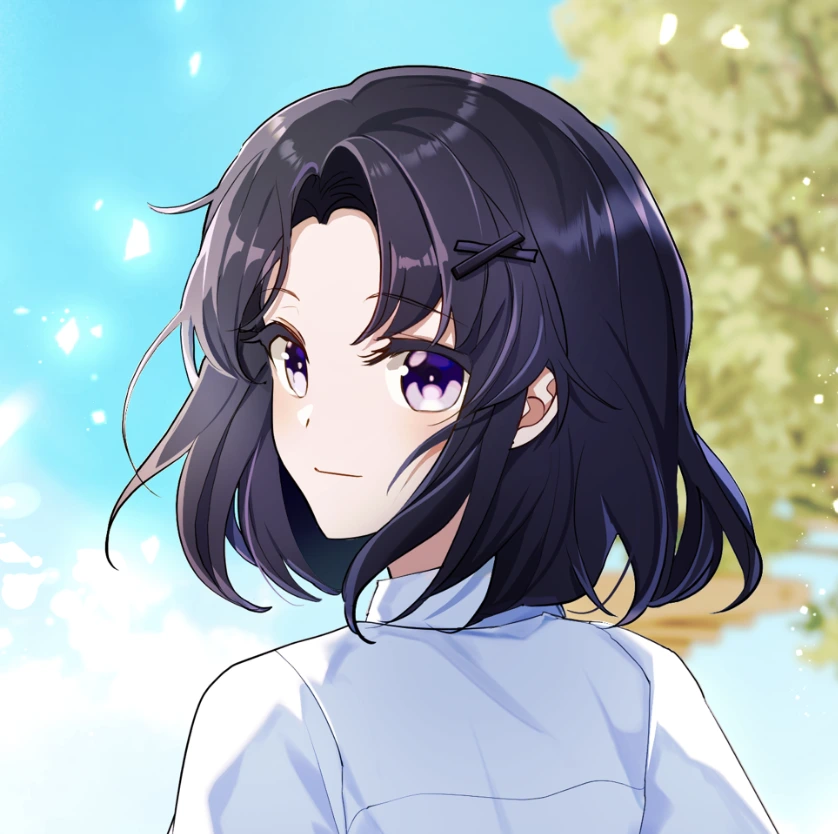
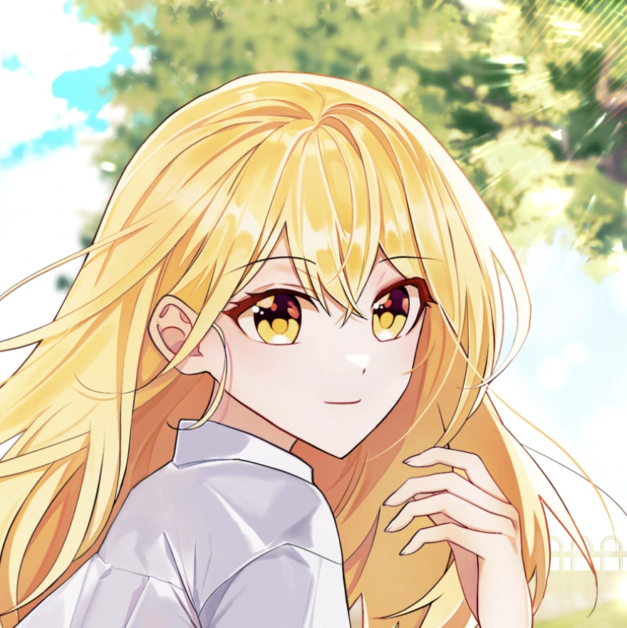

프로젝트 26 · 2025.02.24 발매
그X그녀의 계획은 훼방X훼방
학생회장 선거는 다가오고, 미휘월은 혼란에 빠진다.
이제 나에게 달린 선택만 남았다.
개요
학생회장 선거를 앞둔 미휘월 심화 학교. 누군가는 상대를 끌어내리려 하고, 누군가는 그 손을 잡는다. 그리고 모든 것을 지켜보는 또 한 사람— 진실을 밝혀낼 것인가, 아니면 같은 거짓 선동을 할 것인가?
시스템
학교를 탐색하고 증거를 모아 사건을 해결해 나가야 합니다.

선택지는 기본
일반적으로 여러분이 알고 있는 비주얼 노벨처럼 미휘월 심화 학교에 발생한 일에 대해 알아봅니다.

강화된 선택지
하지만 학교에서 벌어진 일을 선택지로만 해결할 수 없습니다. 학교를 탐색하며 획득한 증거품과 지식으로 학생들과 대화해서 상황을 좀 더 해결해 나갑니다.

상대방의 마음이 움직인다
상대방과 대화를 하며 곤란한 상대방의 의견을 듣고 도와주거나, 학교에서 소외된 학생을 도와줌으로서 실마리를 발견합니다.

학교를 돌아다닌다
학교를 돌아다니며, 어쩌다 얻게 된 를 이용해서 야외로도 돌아다닙니다. 생각지도 못한 행동을 통해 숨겨진 결말을 발견하게 될지도 모릅니다.

호감도로 숨겨진 루트
호감도를 상승 시키면 특별한 루트를 발견할 지도 모릅니다. 숨겨진 루트에서 특별한 시나리오를 감상해보세요.

다양한 결말
당신의 선택에 따라 각기 다른 결말이 기다립니다. 모든 루트를 발견해 진실에 다가가 보세요.
캐릭터
미휘월 심화 학교를 둘러싼 인물들. 각자 사연을 품고 있다.

주인공 (플레이어)
정의감보다는 자신의 감을 우선시하는 성격. 평범했던 그의 일상에 인생 최대의 제압 기회가 찾아온다.

이랑
푸른색 펌 헤어에 실크 셔츠를 즐겨 입는 여리여리한 소녀. 어린 시절 본 드라마의 충격으로 대인기피증이 있으며, 물 공포증 때문에 얼음을 즐겨 먹는다. 가방 속 프릴 달린 양산은 그녀만의 방어기제다.

도희
단정한 벌룬펌에 붉은 입술이 매력적인 똑부러지는 성격. 건강미 넘치는 모습이지만 검은색 액세서리에 집착하는 고집이 있다. 학교 규칙마저 무시하며 자신만의 스타일을 고수하는 강단 있는 인물.

N
노란 트윈테일에 작지만 위압적인 분위기를 풍기는 수수께끼의 선배. 졸업반이라 학생회장 자리에 무관심하지만, 주인공의 특이한 행동에 호기심을 느껴 뒤에서 도움을 주는 관찰자적 인물.

료
주황색 긴 생머리로 과거를 숨긴 채 살아가는 소녀. 부정 입학과 흡연 사실이 폭로될 위기에 처하자, 권력을 쥐어 모든 것을 덮기 위해 수단과 방법을 가리지 않고 학생회장 자리를 노린다.
개발일지
게임 개발 과정을 기록합니다.
지금 플레이하세요
미휘월 심화 학교에서 벌어지는 이야기, 당신의 선택이 결말을 바꿉니다.